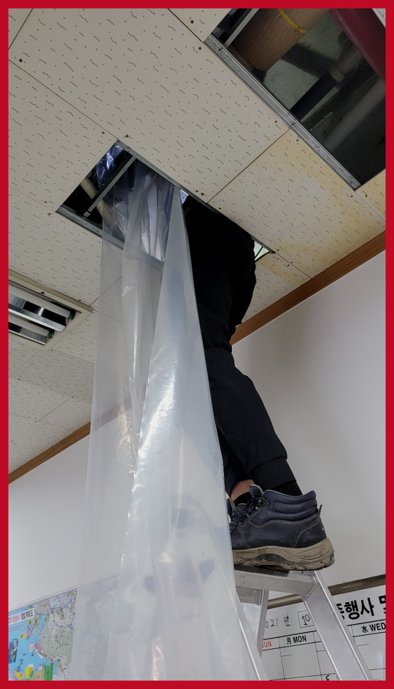
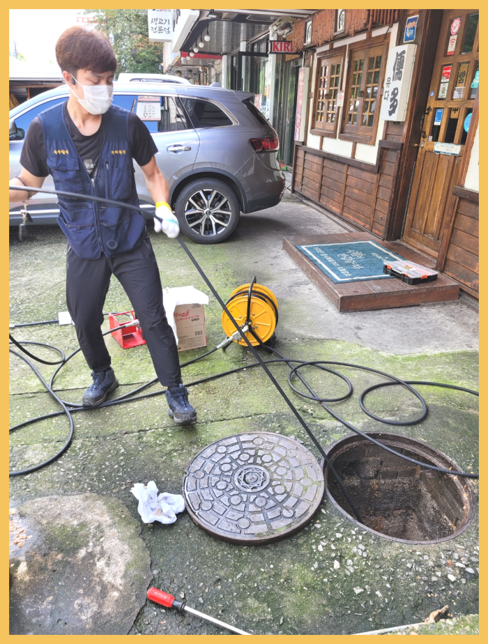
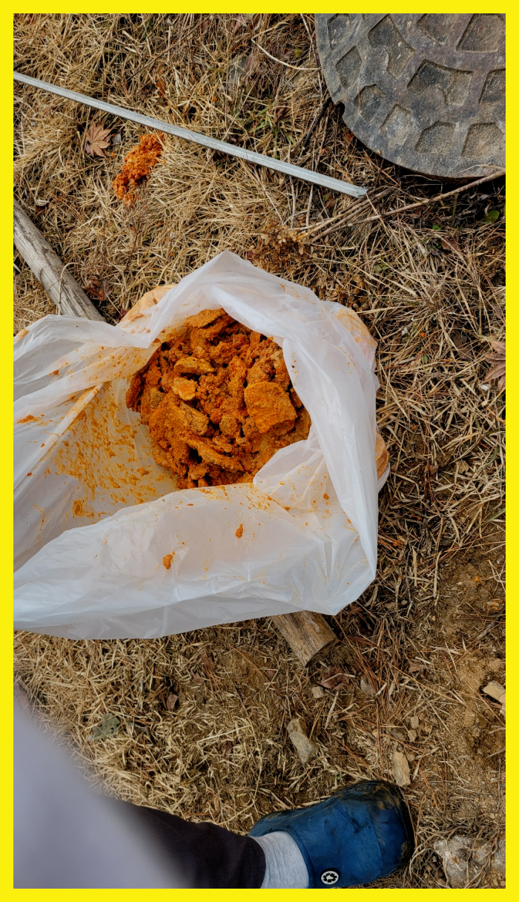
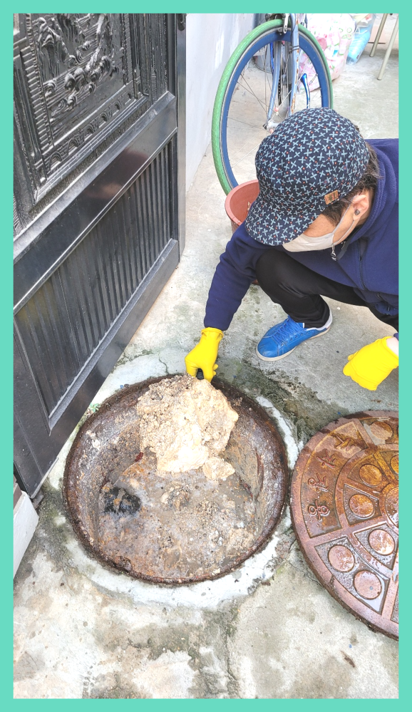
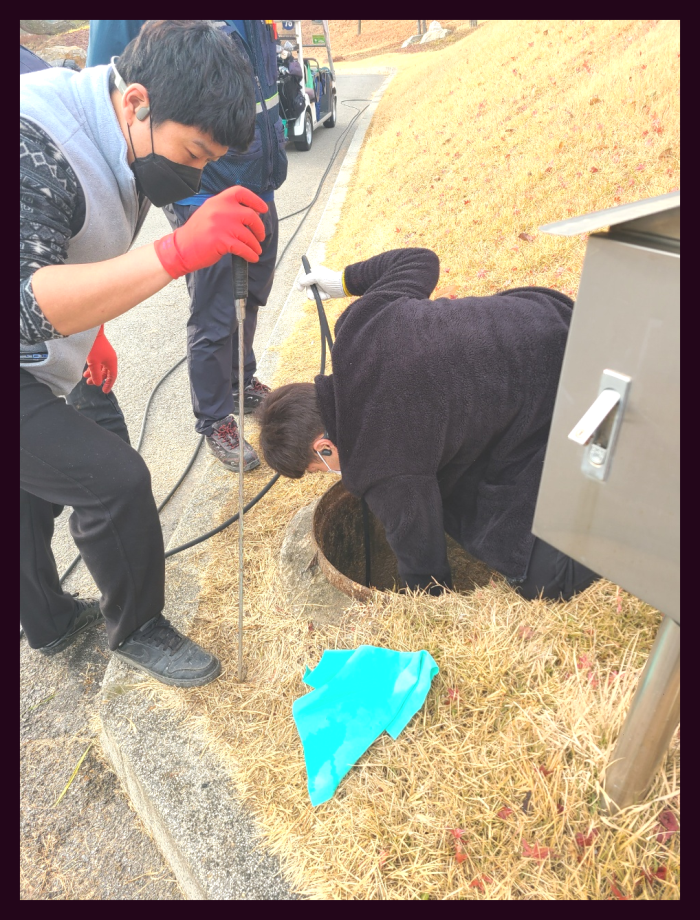

🏠 은평구 녹번동 싱크대배수관막힘 대조동 배수구역류 뚫음 수리
서울 은평구 싱크대막힘 전문 시공 후기

📋 작업 개요
- 위치: 서울 은평구, 은평구, 서울
- 서비스 유형: 싱크대막힘, 변기막힘, 하수구막힘, 배관막힘, 맨홀막힘, 역류해결, 뚫는업체, 배관청소, 고압세척, 설비공사, 배관보수
- 작업 일시: 2024. 1. 7. 21:54
- 업체명: 하수구수사대 (010-5615-2118)
🔍 문제 상황
반갑습니다^^
설비전문업체 "하수구수사대"를 찾아주셔서 감사합니다.
갑자기 하수가 막히게 되면 물이 내려가질 않아서 당황스러울 뿐만 아니라 오물이 역류하기도 합니다. 이런 경우 위생 문제가 심각해지기 때문에 하수막힘을 빠르게 해결을 해야만 하죠.
집이나 사무실에서 퇴수구가 막혀버리면, 일상 생활이나 업무에 큰 불편함이 따르게 됩니다. 배수가 잘 되지 않으면, 목욕이나 설거지 같은 일상 활동에 지장이 생기고, 퇴수구가 역류하는 경우에는 상황이 더욱 심각해질 수 있습니다. 이런 문제를 미리 예방하기 위해서는 꾸준한 청소와 유지보수가 필요하다는 것이죠.

🔎 원인 분석
💡 전문가 진단: 은평구 역촌동 하수도막힘 증산동 맨홀역류 고압세척 청소
은평구 역촌동 하수도막힘 증산동 맨홀역류 고압세척 청소
다가구 건물에서의 좁은 퇴수배관의 경우, 샤프트기를 이용하여 배관 내부의 찌꺼기를 제거하는 것이 중요합니다. 미생물이 번성하여 이물질을 제거하고 퇴수배관을 철저히 청소해야 합니다. 퇴수 문제는 놓치게 되면 상황이 악화될 수 있으므로 빠른 대처가 필요합니다.
하수도 구조를 알고 있는 경우는 극히 드물기 때문에 문제가 생겼을때 수리하는 방법을 모를 수 밖에는 없습니다. 아무리 전문가라고 해도 배관의 깊은 곳까지 두눈으로 들여다 볼수 없기 때문에 반드시 내시경 장비를 사용하여 작업을 하고 있습니다.
대부분의 이물질은 기름때로 인해 생기지만 물티슈,머리카락 등등 다향한 이물질 또는 노후된 배관으로 인해 문제가 되는 경우도 있어서 장비와 실력이 출중한 퇴수구전문업체를 통해서 해결해 보시기 바랍니다.

🔧 작업 과정
샤프트장비는 퇴수구내부 배관 오염 원인인 기름 슬러지를 효과적으로 제거 하는데 도움이 돼서 자주 쓰이게 되요. 노즐의 회전력을 이용하여 스케일링 작업을 진행하는만큼 찌꺼기가 하나로 뭉쳐진 부근 위주로 청소를 하게돼요.
출중한 실력을 갖추고 있어 난이도 있는 현장이더라도 전부 성공한답니다. 다른 사람들은 배출관뚫음 실패해버렸다 해도 해내버리고 있어요. 초심자 업체에 무턱대고 맡겨버렸다가 심각해지기만 하고 뚫리지도 않아 손실만 생겨버리곤 해요.
퇴수구업체를 선택할 때는 당장의 상황을 해결할 수 있는 곳을 찾는 것도 괜찮은 방법이지만 막힌 퇴수구를 뚫고 재발까지 방지할 수 있는 곳을 찾길 권합니다. 저희는 오랜 경력을 바탕으로 뛰어난 실력과 풍부한 노하우를 갖춘 직원들이 직접 작업합니다. 게다가 모든 과정에서 내시경 검사를 하므로 고객님은 옆에서 실시간으로 퇴수구뚫음 작업을 확인하실 수 있습니다.
확실하게할수있는 배출구회사를 알아보고있으신가요? 어떤곳을골라야 할지모르신다면 여러방면에서 생각하셔야됩니다. 그치만이런것을 확인할만한 경황이없을텐데요.위와같은것들을 다가지고있는곳이 시간과더불어 돈에관해서도 아낄수있는업체입니다
경력이많은 경력자분들이 도착해서 고쳐드리고있기에 어떤곳이든 해결하고있습니다.오랫동안 의뢰하시는 단골분들이 계실수있는 이유가있다면 한번만고치고 마는게아니기때문입니다.
하수관배관 내부는 우리가 생각하는 것 이상으로 많은 변수에 노출되어 있습니다. 가장 대표적인 예가 하수관배관 손상인데요. 워낙 길게 매립되어 있는 데다 주변 공사, 충격 등에 의해일부가 무너져 내린다던 자 손상될 확률은 얼마든지 있습니다.
세척을 끝내고 배출구에 돌아가 많은 양의 물을 한 번에 부어보니 작은 소용돌이 모양을 만들며 빠르게 내려가는 것으로 확인되었습니다. 배출구내시경을 통해서도 외부까지 연결된 배출구배관 상태가 말끔해진 것을 체크하였고, 이후 마감 작업까지 꼼꼼하게 해드렸습니다.


✅ 작업 완료
밤이든 낮이든 근무 중이기에 언제가 됐든 간에 의뢰해 주세요. 직접 보지 않고선 정확한 금액 안내가 힘들겠지만 기준 금액만큼은 말씀 가능하니 여쭙고 싶은 상황이 있으실 경우에는 전화 주시면 되십니다.퇴수가 막혀 대처하고 싶으시거나 상담을 원하실 경우 전화 걸어주세요
#하수구막힘 #하수구뚫음 #하수구역류 #씽크대막힘 #싱크대역류 #오수관막힘 #하수구청소 #욕실하수구막힘 #변기막힘 #하수구뚫는비용 #싱크대수리 #화장실막힘




⚠️ 주방 싱크대 배관 막힘 예방 수칙
- ✅ 기름기가 묻은 식기나 프라이팬은 설거지 전 키친타올로 반드시 기름때를 닦아내세요.
- ✅ 주기적으로 싱크대 개수대에 뜨거운 물을 가득 받아 한 번에 내려 배관 내부 기름을 씻어내세요.
- ✅ 배수구 거름망을 미세한 필터로 사용하시고 음식물 찌꺼기가 틈으로 새어 들지 않게 관리하세요.
- ✅ 베이킹소다와 식초를 뜨거운 물과 함께 일주일에 한 번씩 부어주면 배관 살균과 막힘 예방에 좋습니다.
💡 핵심 정리
- 확실한 장비 작업(내시경 점검 및 샤프트 스케일링)으로 원인을 뿌리 뽑습니다.
- 작업 후 1년 이내에 동일한 부위 재발 시 100% 무상 A/S 서비스를 보장합니다.
- 서울 · 경기 · 인천 전 지역에 24시간 언제든 긴급 출동할 수 있도록 항시 대기 중입니다.
❓ 자주 묻는 질문 (FAQ)
🚨 서울 은평구 싱크대막힘 문제로 고민이신가요?
정확한 원인 진단과 확실한 시공으로 재발 없는 해결을 약속드립니다.
24시간 긴급 출동 | 서울 · 경기 · 인천 전지역 | 1년 내 재발 시 무상 A/S